Contents
%Charlie Nitschelm, 11/13/19 clear all close all addpath('C:\Users\User\Desktop\Charlie\Classes\Senior Year\S-Lab\Lab4\1'); addpath('C:\Users\User\Desktop\Charlie\Classes\Senior Year\S-Lab\Lab4\2.1.3'); addpath('C:\Users\User\Desktop\Charlie\Classes\Senior Year\S-Lab\Lab4\2.1.4'); addpath('C:\Users\User\Desktop\Charlie\Classes\Senior Year\S-Lab\Lab4\2.2.1'); addpath('C:\Users\User\Desktop\Charlie\Classes\Senior Year\S-Lab\Lab4\3.1'); addpath('C:\Users\User\Desktop\Charlie\Classes\Senior Year\S-Lab\Lab4\3.2');
Part 1
% a.) Weight = [10.1 60.1 110.1 160.1 210.1 260.1 310.1 360.1]./28.35; Increasing = [937 1015 1095 1173 1246 1330 1412 1484]./1000; Decreasing = [936 1015 1096 1175 1249 1331 1413 1491]./1000; % reading in data from accelerometer Acc_Volt = xlsread('Instrument_2 Capture 2019-10-31 15-14-13 Oscilloscope - Waveform Data.csv', 'A7:A100006'); t = 0:1.024e-5:(1.024e-5) * 1e5; t = t(1:end-1); dV = 103/1000; a = polyfit(Weight, Increasing, 1); Sensitivity = a(1); Cal_curve = a(1)*Weight + a(2); figure(1) plot(Weight, Increasing, Weight, Decreasing, Weight, Cal_curve); xlabel('Weight [oz_{f}]'); ylabel('e_{o} [V]') title('Output voltage vs Weight') legend('Increasing', 'Decreasing', 'Calibration Curve','Location', 'northwest') text(8, 1.1, strcat({'Sensitivity: '}, num2str(Sensitivity,4), ' V/oz_{f}')) grid on % b.) smooth = 4; [Acc_Volt, smooth] = wsmooth(Acc_Volt, t, smooth); Acc_Volt = Acc_Volt - Acc_Volt(1); min = -.1; for j = 1:length(Acc_Volt) if Acc_Volt(j) <= min min = Acc_Volt(j); else end end zeta_overshoot = 0.45; p_overshoot = 0.1524/0.6819; meff = (dV/a(1)); Acc_Volt = Acc_Volt.*-1; %find peaks now th = 0.01; [peakLoc, peakMag] = peakfinder(Acc_Volt, th); peakLoc(1) = []; peakMag(1) = []; % finding damped natural frequency Td = 1/(t(peakLoc(2)) - t(peakLoc(1))); wd = Td*2*pi; % wd figure(2) plot(t, Acc_Volt, t(peakLoc), peakMag, 'd') xlabel('Time (s)') ylabel('Position ( )') for j = 1:length(peakLoc) y(j) = log(peakMag(1)/peakMag(j)); end n = 0:length(y)-1; dampr = zeros(1, length(peakLoc)); for jj = 1:length(peakLoc) num = ((1/length(n))*log(peakMag(1)/peakMag(jj))); dampr(jj) = num/(sqrt(4*pi^2 + num^2)); end zeta = mean(dampr); wn = wd/(sqrt(1 - zeta_overshoot^2)); % wd = wn*sqrt(1-zeta^2) [rad/s] spring_Const = (meff*(wn/(2*pi))^2)/(32.2 * 12); % ozf/in figure(4) plot(t, -1*Acc_Volt); title('Output voltage vs. Time') xlabel('Time [s]'); ylabel('e_{o} [V]') text(0.5, 0.4, strcat({'Spring Constant, K: '}, num2str(spring_Const,4), ' oz_{f}/in')); text(0.5, 0.33, strcat({'Natural Frequency, \omega_{n}: '}, num2str(wn,4), ' rad/s')); text(0.5, 0.27, strcat({'Effective Mass, m_{eff}: '}, num2str(meff,4), ' oz_{m}')); % c.) sens1 = (meff*Sensitivity)/386; % V/(in/s2) % d.) max_acc = (Increasing(end))/sens1; % e.) num = [1]; den = [1/(wn^2) ((2*zeta_overshoot)/wn) spring_Const]; sys = tf(num, den); % bode plot of data motherfucker! figure(3) bode(sys) grid on % da plots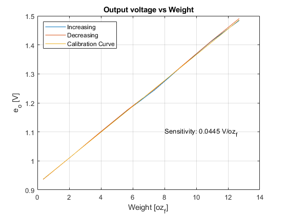 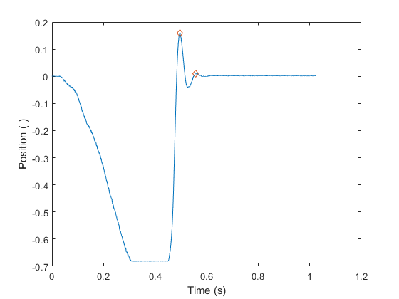 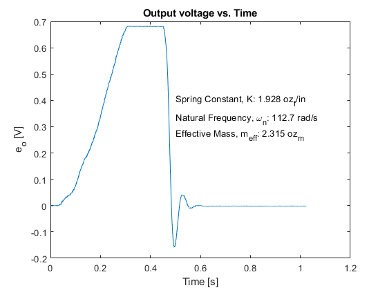 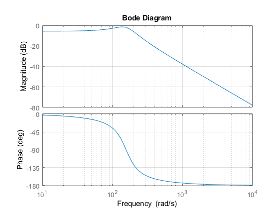
Part 2 Piezoelectric Force Sensor
Part 2.1
piezo_weight = 0:200:1600; % grams piezo_weight = (piezo_weight./453.6); voltage = [0 23 44 69.8 85 106 126 141 167]; % mV b = polyfit(piezo_weight, voltage, 1); sensitivity2 = b(1); cal_curve2 = b(1)*piezo_weight + b(2); for j = 1:length(voltage) residual(j) = abs(voltage(j) - cal_curve2(j)); end max_error = max(residual); percent_FS = max_error/voltage(end); % Plots figure(5) plot(piezo_weight, voltage, '-o', piezo_weight, cal_curve2, '-o') text(0.25, 160, strcat({'Sensitivity: '}, num2str(sensitivity2,4), ' mV/lb_{f}')); text(0.25, 150, strcat({'Percent Full: '}, num2str(percent_FS*100,4), ' %')); title('Calibration Curve for piezo force sensor'); xlabel('Weight [lb_{f}]'); ylabel('Voltage [mV]'); legend('Data', 'Calibration Curve', 'Location', 'southeast'); num_peaks = 2; time_e = .00460 - .00446; nat_freq = 2*pi*(num_peaks/time_e); %reading in data of voltage volt_data = xlsread('Instrument Capture 2019-10-31 14-39-55 Oscilloscope - Waveform Data.csv', 'A6:A12008'); % Volt t = 0:1e-6:(1e-6)*12002; t = t(1:end-1); figure(6) plot(t, volt_data); xlabel('Time [s]'); ylabel('Voltage [V]'); title('Voltage vs. Time for Piezoelectric Force Sensor'); % Part 2.2 impulse_mass = 2; %in lbf impulse_volt = xlsread('Impulse Loading.xlsx' ,'A7:A100007'); impulse_t = t:2.4030e-5:(2.4030e-5)*100000; impulse_t = impulse_t(1:end-1); %plot(impulse_time, impulse_volt) th = 0.005; [peakLoc, peakMag] = peakfinder(impulse_volt, th); peakLoc(1) = []; peakMag(1) = []; % Damped Natural Frequency n_peaks = length(peakLoc); Td = 1/(impulse_t(peakLoc(2)) - impulse_t(peakLoc(1))); wd = Td*2*pi; % wd % figure(7) plot(impulse_t, impulse_volt, impulse_t(peakLoc), peakMag, 'o') xlabel('Time [s]') ylabel('Voltage [mV]') title('Peaks of Piezo Accelerometer Data') for j = 1:length(peakLoc) y(j) = log(peakMag(1)/peakMag(j)); end n = 0:length(y)-1; dampr = zeros(1, length(peakLoc)); for jj = 1:length(peakLoc) num = ((1/length(n))*log(peakMag(1)/peakMag(jj))); dampr(jj) = num/(sqrt(4*pi^2 + num^2)); end impulse_zeta = mean(dampr); impulse_wn = wd/(sqrt(1 - impulse_zeta ^2)); % 6/(1.6396 - 1.2787) % this comes from counting impulse_springConst = (impulse_mass*(impulse_wn/(2*pi))^2)/(32.2*12); impulse_dampCoeff = ((2*impulse_zeta)/impulse_wn); impulse_volt = impulse_volt(49393:end); impulse_volt = impulse_volt - impulse_volt(1); impulse_t = impulse_t(49393:end); impulse_t = impulse_t - impulse_t(1); impulse_num = [1]; impulse_den = [1/(impulse_wn^2) (2*impulse_zeta)/impulse_wn impulse_springConst]; impulse_sys = tf(impulse_num, impulse_den); [force, x] = impulse(impulse_sys, impulse_t(end)); figure(8) plot(x, 0.00094*force, impulse_t, impulse_volt) xlabel('Time [s]'); ylabel('Voltage [V]'); title('Impulse Response - Simulated and Actual') legend('Simulated Response', 'Data')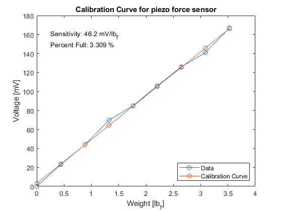 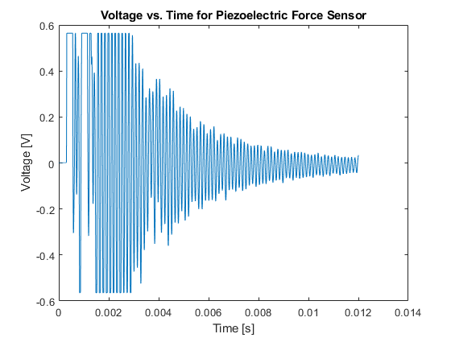 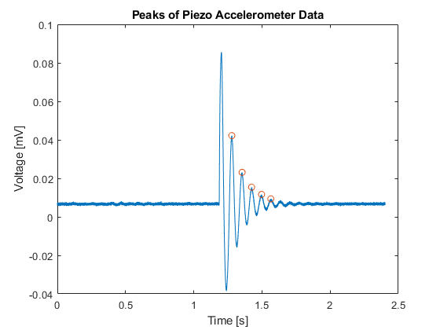 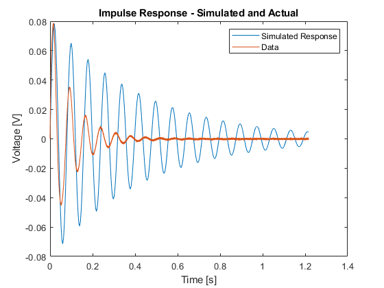
Part 3
LVT_Acc = xlsread('LVTandAccel.csv', 'A8:A100007'); Acc = xlsread('LVTandAccel.csv', 'B8:B100007'); Time = linspace(-.34745,-.34745+0.00001168*100000,100000)'; %part a figure(9) plot(Time,LVT_Acc) hold on plot(Time,Acc) xlabel('Time (s)') ylabel('Voltage (V)') legend('LVT Output','Accelerometer Output') Acc_Fall = -.09; %Volts for 1g Sens_Acc = abs(Acc_Fall/(32.2*12)) %volts/in/sec2 % At t = -.06, object starts falling and is constant till t=-.04 for x = 1:100000 if Time(x)>-.06 t1_x = x; break end end for x = 1:100000 if Time(x)>-.04 t2_x = x; break end end Change_V = (32.2*12)*.02; Delta_Voltage = abs(LVT_Acc(t2_x) - LVT_Acc(t1_x)); Sens_LVT_Acc = Delta_Voltage/Change_V %volt/in/sec
Sens_Acc =
2.3292e-04
Sens_LVT_Acc =
0.1196
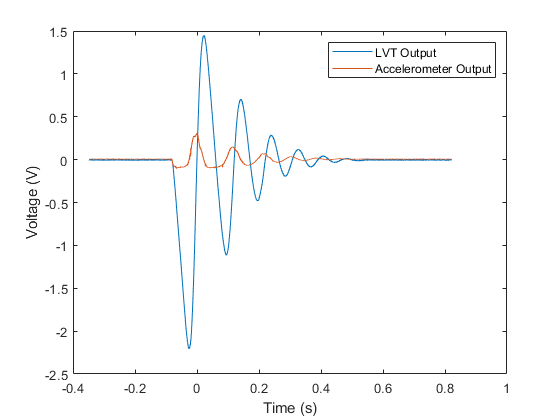 %b Acc_In = Acc./Sens_Acc; Acc_In = Acc_In - mean(Acc_In(1:1500)); LVT_Acc_In = LVT_Acc./Sens_LVT_Acc; Int_Acc = cumtrapz(Time,Acc_In); figure(10) plot(Time,Int_Acc,Time,LVT_Acc_In) xlabel('Time (s)') ylabel('Velocity (in/s)')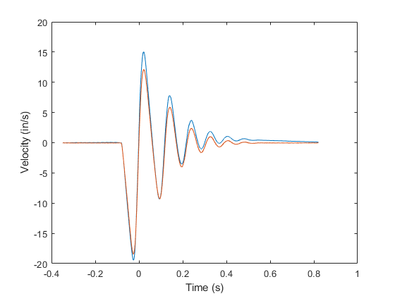
c
LVT_Force = xlsread('LVTandForce.csv', 'A8:A100007'); Force = xlsread('LVTandForce.csv', 'B8:B100007'); Force = Force-mean(Force(1:100)); %beginning of the drop for x = 1:100000 if Acc_In(x)<-30 x_drop = x; break end end %first contact of core and foam for x = 1:100000 if Force(x)> .03 x_hit = x; break end end %max displacement --- max force! Force_Max = max(Force); for x = 1:100000 if Force(x)== Force_Max x_maxdisp = x; break end end % finding first bounce th = 0.03; [peakLoc, peakMag] = peakfinder(Force, th,'minima',-1); figure(11) plot(Time,Force,Time(peakLoc),Force(peakLoc)) x_firstbounce = peakLoc(2); %possible, might not be a bounce, very close %permanent contact % once it hits foam, it doesnt seem to bounce at all figure(12) plot(Time,LVT_Acc) hold on plot(Time,Acc) plot(Time(x_drop),LVT_Acc(x_drop),'o',Time(x_hit),LVT_Acc(x_hit),'o',Time(x_maxdisp),LVT_Acc(x_maxdisp),'o',Time(x_firstbounce),LVT_Acc(x_firstbounce),'o') text(.25,-.5,strcat('Beg. of Drop is ' ,{' '},num2str(Time(x_drop)),{' '}, 'sec')) text(.25,-.75,strcat('First mass contact is' ,{' '},num2str(Time(x_hit)),{' '}, 'sec')) text(.25,-1,strcat('Max disp. is' ,{' '},num2str(Time(x_maxdisp)),{' '}, 'sec')) text(.25,-1.25,strcat('Possible first bounce is ' ,{' '},num2str(Time(x_firstbounce)),{' '}, 'sec')) text(.25,-1.5,'Permanent contact after first bounce') xlabel('Time (s)') ylabel('Voltage (V)') legend('LVT Output','Accelerometer Output')
Warning: The threshold must be a real scalar. No threshold will be used.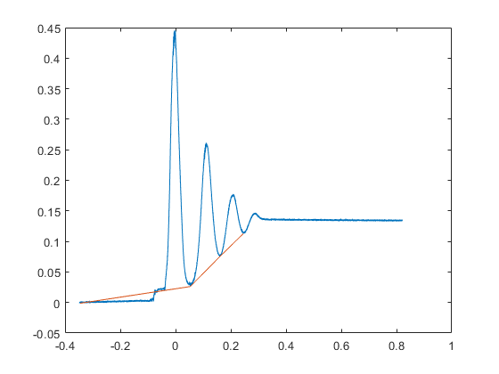 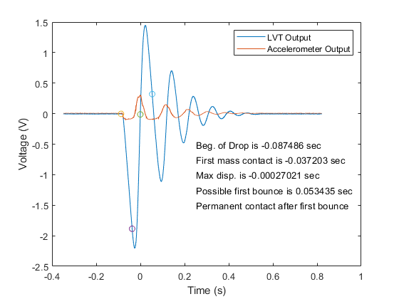
d. maximum velocity of core
LVT_Acc_In; Max_Vel = max(abs(LVT_Acc_In)) %in/s %%e figure(13) plot(Time,LVT_Force,Time,Force) legend('LVT','Force Sensor','location','southeast') xlabel('Time (s)') ylabel('Voltage (V)') Force_lbf = Force./.491; %lbf for x = 1:100000 if abs(LVT_Acc_In(x))== Max_Vel x_maxvel = x; break end end Force_maxvel = Force_lbf(x_maxvel) Force_steady = mean(Force_lbf(end-1000,end)) total_mass = Force_steady/32.2
Max_Vel =
18.4652
Force_maxvel =
0.2219
Force_steady =
0.2740
total_mass =
0.0085
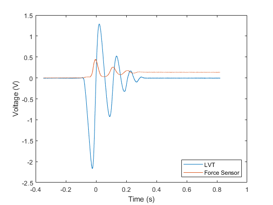